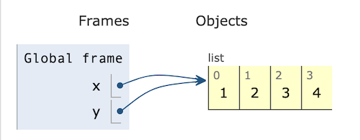
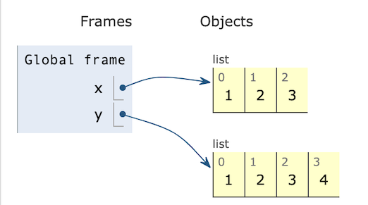
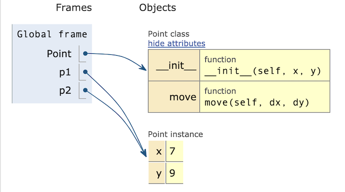
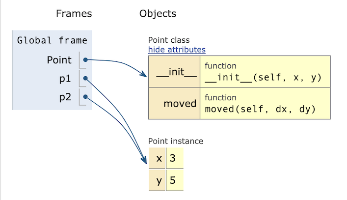
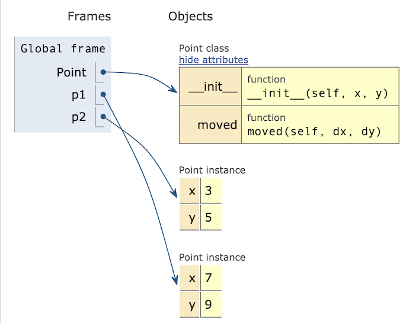

References to Objects#
Variables refer to objects#
Before reading on, try to predict what the following little program will print.
x = [1, 2, 3]
y = x
y.append(4)
print(x)
print(y)
Now execute that program. Did you get the result you expected? If it surprised you, try visualizing it in PythonTutor (http://pythontutor.com/). You should get a diagram that looks like this:

x and y are distinct variables, but they are both references to
the same list. When we change y by appending 4, we are changing the
same object that x refers to. We say that x and y are aliases,
two names for the same object.
Note this is very different from the following:
x = [1, 2, 3]
y = [1, 2, 3]
y.append(4)
print(x)
print(y)
Each time we create a list like [1, 2, 3], we are creating a distinct
list. In this seocond version of the program, x and y are not
aliases.

It is essential to remember that variables hold references to objects, and there may be more than one reference to the same object. We can observe the same phenomenon with classes we add to Python. Consider this program:
p1 = Point(3,5)
p2 = p1
p1.move_to(7, 9)
print(p2)
---------------------------------------------------------------------------
NameError Traceback (most recent call last)
Cell In[1], line 1
----> 1 p1 = Point(3,5)
2 p2 = p1
3 p1.move_to(7, 9)
NameError: name 'Point' is not defined
Once again we have created two variables that are aliases, i.e., they refer to the same object. PythonTutor illustrates:

Note that Point is a reference to the class, while p1 and p2 are
references to the Point object we created from the Point class. When
we call p1.move, the move method of class Point makes a change to
the object that is referenced by both p1 and p2. We often say that
a method like move mutates an object.
Mutable and Immutable#
There is another way we could have written a method like move.
Instead of mutating the object (changing the values of its fields
x and y), we could have created a new Point object at the
modified coordinates:
class Point:
"""An (x,y) coordinate pair"""
def __init__(self, x: int, y: int):
self.x = x
self.y = y
def moved(self, dx: int, dy: int) -> "Point":
return Point(self.x + dx, self.y + dy)
p1 = Point(3,5)
p2 = p1
p1 = p1.moved(4,4)
print(p1.x, p1.y)
print(p2.x, p2.y)
Notice that method moved, unlike method move in the prior example,
return a new Point object that is distinct from the Point object that
was aliased. Initially p1 and p2 may be aliases, after p2 = p1:

But after p1 = p1.moved(4,4), p1 refers to a new, distinct object:

As we saw with the list example, aiasing applies to objects
from the built-in Python classes as well as to objects
from the classes that you will write. It just hasn’t been
apparent until now, because many of the built-in classes
are immutable: They do not have any methods that
change the values stored in an object. For example, when
we write 3 + 5, we are actually calling (3).__add__(5);
The __add__ method does not change the value of 3 (that
would be confusing!) but instead returns a new object 8.
We will write both immutable classes and mutable classes.
It is typically easier to reason about the behavior of immutable
classes (which is why so many of Python’s basic classes are
immutable). On the other hand, it may be more efficient to mutate
an object than to return a new object with a small change (which is
why most of Python’s built-in collection classes, like list and
dict, are mutabble).
Aliasing of mutable objects is often a mistake, but not always.
Later we will intentionally create aliases to access
mutable objects. The important thing is to be aware of it.